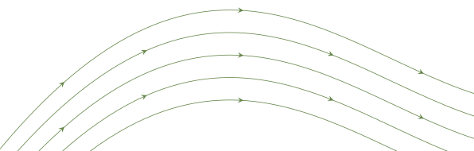

Interactive phase portraits
Figure 2.7
Figure 3.1 (top row)
Figure 3.1 (bottom row)
Figure 4.4 (top row)
Figure 4.4 (bottom row)
Figure 4.5
Figure 4.6
Figure 4.7
Figure 4.8
Figure 4.9
Figure 4.10
Figure 4.11
